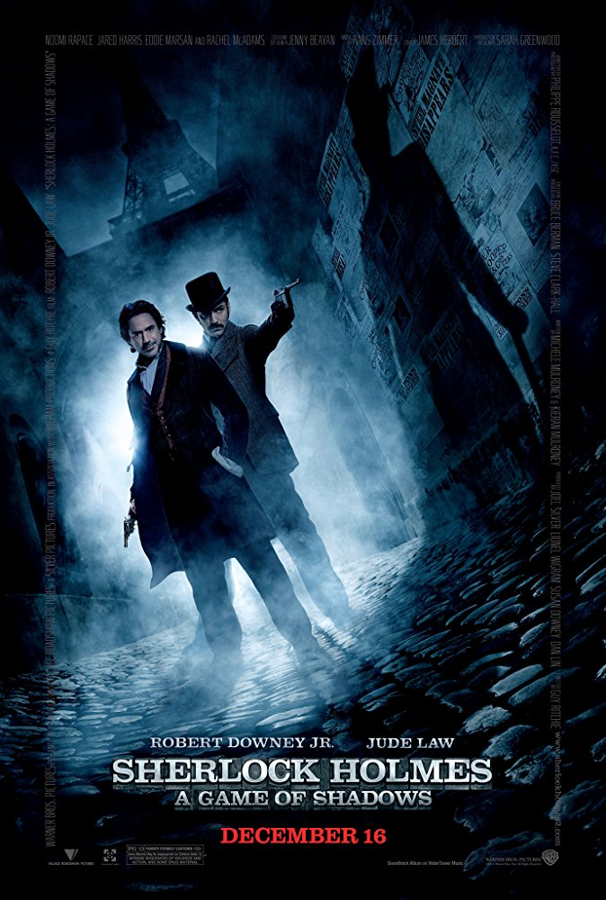
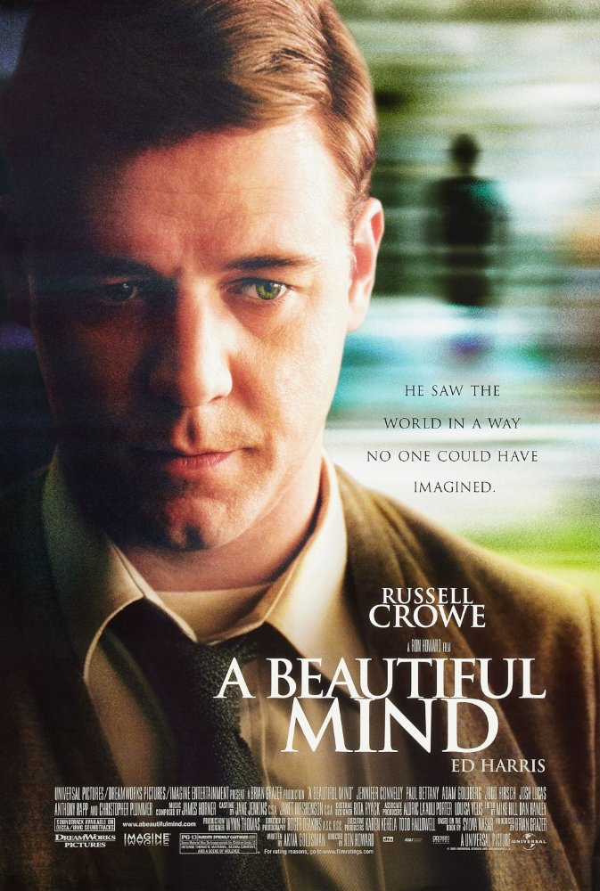
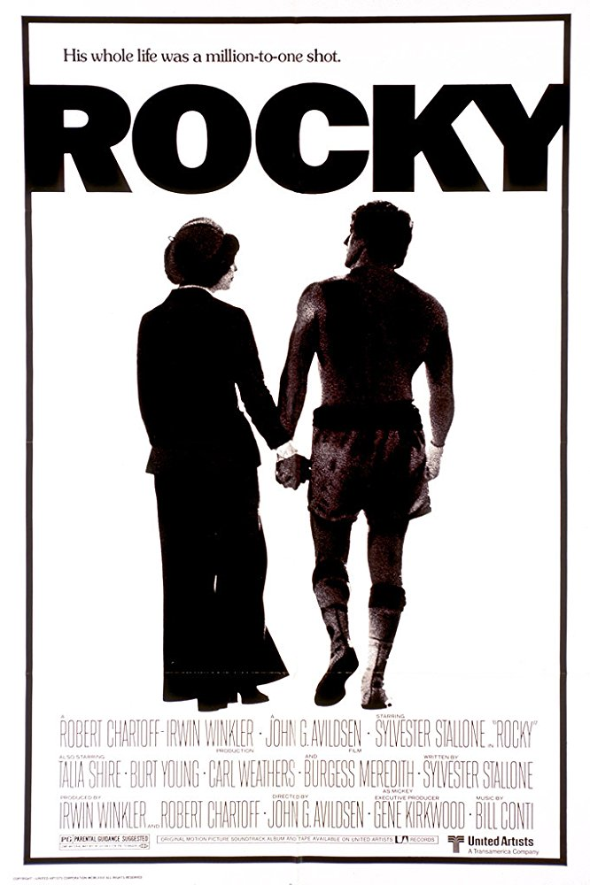

Sherlock Holmes a game of shadows

Genre:Detective,action.
Release Date: 16.12.2011.
Directed by:Guy Ritchie.
Description:In 1891, Irene Adler delivers a package to Dr. Hoffmanstahl, payment for a letter he was to deliver.Hoffmanstahl opens the package, triggering a hidden bomb that is prevented from detonating by the
intervention of Sherlock Holmes.
Later, Dr. Watson arrives at 221B Baker Street, where Holmes discloses that he is investigating
a series of seemingly unrelated murders,
terrorist attacks and business acquisitions around the globe that he has connected to Moriarty.
A beautiful mind

Genre: Biographical drama.
Release Date:13.12.2001.
Directed by:Ron Howard.
Description:In 1947, John Nash arrives at Princeton University. He is co-recipient, with Martin Hansen,
of the prestigious Carnegie Scholarship for mathematics. At a reception, he meets a group of other
promising math and science graduate students, Richard Sol, Ainsley (Jason Gray-Stanford), and Bender.
He also meets his roommate Charles Herman, a literature student.In 1994, Nash wins the Nobel Memorial Prize
in Economics for his revolutionary work on game theory, and is honored by his fellow professors. The movie
ends as Nash, Alicia, and their son leave the auditorium in Stockholm; Nash sees Charles, Marcee, and Parcher
standing to one side and watching him.
Rocky

Genre:Drama,Sport.
Release Date:21.11.1976.
Directed by:John G. Avildsen.
Description:In late 1975, the heavyweight boxing world champion, Apollo Creed, announces
plans to hold a title bout in Philadelphia during the upcoming United States Bicentennial.
However, he is informed five weeks from the fight date that his scheduled opponent is unable
to compete due to an injured hand. With all other potential replacements booked up or otherwise unavailable,
Creed decides to spice things up by giving a local contender a chance to face him.He settles on Rocky Balboa,
an aspiring southpaw boxer from an Italian neighborhood of Philadelphia, known by the nickname "The Italian Stallion".
Home alone

Genre:Comedy,Family.
Release Date:16.11.1990.
Directed by:Chris Columbus.
Description:The McCallister family is preparing to spend Christmas in Paris,
gathering at Peter and Kate's home outside of Chicago on the night before their
departure. Peter and Kate's youngest son, eight-year-old Kevin,is being ridiculed
by his siblings and cousins. A fight with his older brother, Buzz, results in Kevin
getting sent to the third floor of the
house for punishment, where he wishes that
his family would disappear. During the night, heavy winds cause damage to power lines,
which causes a temporary power outage and resets the alarm clocks,
causing the entire family to oversleep. In the confusion and rush to get to the airport,
Kevin is accidentally left behind.
Click this to come back home to page
<